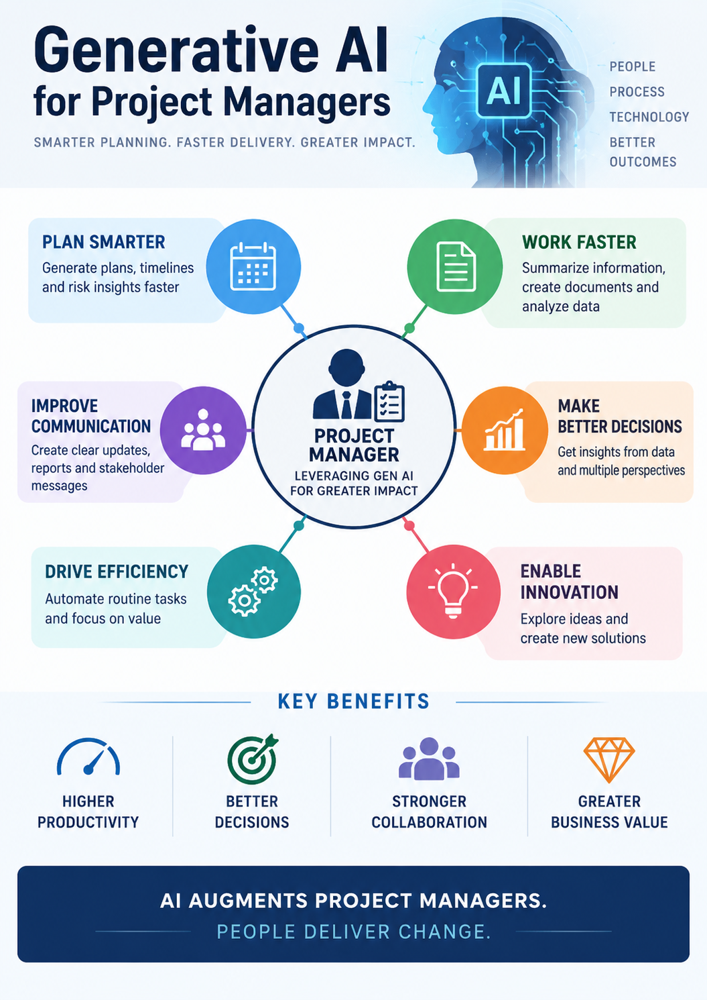

GENERATIVE AI
Generative AI for Project Managers
Generative AI • Program Management • AI Transformation • Delivery

Generative AI for Project Managers
Why Generative AI Matters for Project Managers
Generative AI is changing how project and program teams plan, communicate,
analyze information and manage delivery. For project managers, the value is
not simply using an AI chatbot. The larger opportunity is to integrate AI
into everyday delivery workflows while maintaining human oversight,
governance and accountability.
Project managers can use Generative AI to accelerate repetitive activities,
improve access to project information, identify risks earlier and support
faster decision-making.
Core Generative AI Capabilities
- Natural-language interaction with project information
- Document summarization and knowledge extraction
- Meeting and action-item summarization
- Content and status-report generation
- Risk, issue and dependency analysis
- Requirements and user-story assistance
- Code and technical documentation assistance
- Data analysis and insight generation
How Project Managers Can Use Generative AI
Generative AI can support the project lifecycle from initiation through
closure. The project manager remains responsible for validating outputs,
making decisions and ensuring that project governance is followed.
- Project Initiation: Draft project charters, objectives, assumptions and stakeholder maps.
- Planning: Create initial WBS structures, milestone plans, RAID registers and communication plans.
- Requirements: Summarize business requirements and assist with user stories and acceptance criteria.
- Execution: Summarize meetings, track actions and prepare status updates.
- Risk Management: Identify potential risk themes and suggest questions for further analysis.
- Reporting: Transform delivery data into executive-friendly summaries.
- Go-Live: Organize readiness information, cutover activities and issue summaries.
- Closure: Summarize lessons learned and create reusable knowledge assets.
Generative AI in Project Governance
Governance Support: AI can help consolidate information from project plans, RAID logs, meeting notes and status reports to prepare management-review material.
Human Accountability: AI-generated content should be treated as an input to the governance process. Project managers and accountable stakeholders must validate facts, decisions and actions.
Generative AI Use Cases
- Weekly Status Report preparation
- Executive summary generation
- RAID log analysis
- Meeting minutes and action tracking
- Requirements summarization
- Project documentation drafting
- Release-note preparation
- Lessons-learned analysis
- Knowledge-base search and question answering
- Project communication drafting
Case Study – AI-Assisted Digital Transformation Program
Consider a large digital transformation program involving business,
application development, data, cloud, security and operations teams.
The project manager manages a high volume of requirements, meeting
outputs, risks, dependencies and executive reporting.
A governed Generative AI capability can be introduced as an assistant
for project information management. The AI solution can help summarize
approved project documents, identify related information and prepare
draft management communications.
- Establish approved sources of project information
- Define access controls and information boundaries
- Connect approved project documentation and knowledge sources
- Develop prompts and reusable project-management templates
- Validate AI-generated outputs before distribution
- Track adoption, quality and business value
- Continuously improve prompts, workflows and governance
Traditional PM Activities vs AI-Assisted PM
Traditional approach: Project managers manually consolidate information from multiple documents, meetings, spreadsheets and communication channels before preparing reports and decisions.
AI-assisted approach: Generative AI can help consolidate and summarize approved information, allowing the project manager to spend more time on analysis, stakeholder alignment, decisions and delivery.
Generative AI Tools and Technology Landscape
Enterprise AI initiatives may use foundation models, enterprise AI
platforms, retrieval-augmented generation, vector databases, cloud AI
services and collaboration tools. Technology choices should reflect
organizational security, architecture, data and compliance requirements.
- Large Language Models (LLMs)
- Retrieval-Augmented Generation (RAG)
- Enterprise AI assistants
- Cloud AI platforms
- Vector databases and semantic search
- AI APIs and orchestration frameworks
- Document and knowledge-management platforms
Risks and Governance Considerations
Generative AI introduces risks that project managers should consider
as part of normal program governance. AI output can be inaccurate,
incomplete or unsuitable for a particular business context.
- Accuracy and hallucination risk
- Data privacy and confidential-information exposure
- Security and access-control requirements
- Intellectual-property considerations
- Model and output quality monitoring
- Human review and approval
- Traceability and auditability
- Responsible and ethical AI practices
Project Manager's Role in Generative AI Transformation
- Define business objectives and measurable outcomes
- Identify high-value use cases
- Coordinate business, technology, data and security teams
- Establish delivery roadmap and governance
- Manage AI-related risks and dependencies
- Drive stakeholder adoption and change management
- Track value realization and adoption metrics
- Ensure human oversight of critical decisions
Benefits
- Reduced time spent on repetitive documentation
- Faster access to project knowledge
- Improved consistency of project communications
- Faster preparation of management reports
- Better support for requirements and analysis activities
- More time for strategic stakeholder and delivery management
Key Takeaway
Generative AI should be viewed as a project-management productivity
and decision-support capability—not as a replacement for project
leadership. Strong outcomes come from combining AI capabilities with
human judgment, governance, quality controls and clear business objectives.